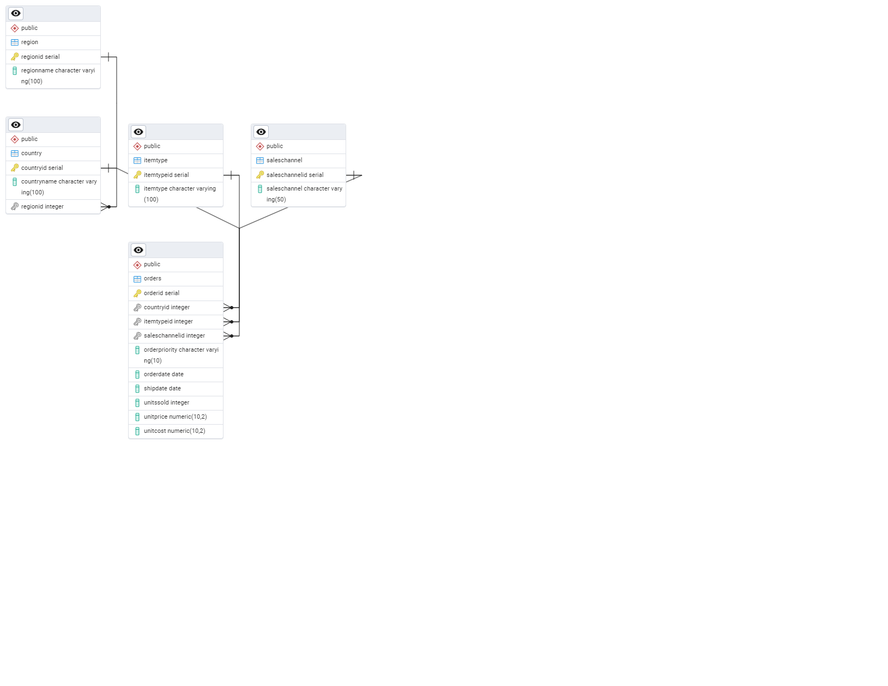

Business question
How should transactional and product data be structured to support reliable reporting and flexible exploration?
Approach
How the work was done
- Designed a 3NF PostgreSQL schema across Region, Country, ItemType, SalesChannel, and Orders, with a staging-table load from 100,000 sales records.
- Built an analytical layer for quarterly and regional revenue/profit, product performance, and reusable management views using SQL, indexes, CTEs, and subqueries.
- Created a parallel MongoDB design for cosmetics and grocery data, using collections, aggregation queries, and indexes for recorded item-purchase activity and product discovery.
Results
What the analysis shows
- The regional report totals $10.31 billion for Sub-Saharan Africa and $10.08 billion for Europe, the two largest modeled profit totals in the dataset. These are dataset aggregations, not profit improvements caused by the database.
- On 100,000 orders, the regional profit report returned seven rows in 89 ms before indexing and 71 ms afterward. Each query was timed once in each condition; repeated runs under comparable conditions would be needed to establish a repeatable speedup.
- The grocery aggregation counts recorded item purchases per member, not shopping visits. The ingredient query finds 772 products; a separately labeled rating-at-least-4 variant finds 574.
From the project
How the reporting tables connect

Five tables with shared definitions
The relationships give the quarterly, regional and product reports a consistent structure. The SQL schema provides the complete field definitions.
Business relevance
What this makes easier to decide
The paired designs show how data structure follows the question: normalized relational tables support repeatable transaction reporting, while document collections allow more flexible product-level exploration.